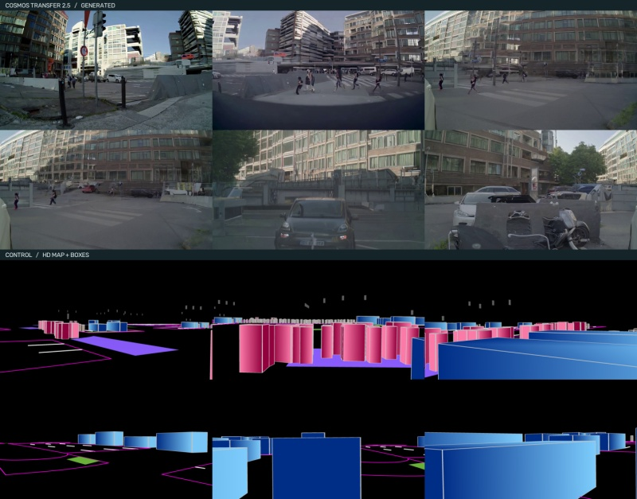

密集行人过街 · 路口下载 MP4恐龙横穿
2026-11-21 11:24（北京时间）已收录 10 / 10 条。
密集行人过街 2 例 · 遮挡行人探出 4 例 · 动物横穿 4 例
Transfer 2.5 · 密集行人过街 · 路口
dense_pedestrian_crosswalk_002上方为生成，下方为同帧 HDMap 与目标框控制。两组画面均按左前、前、右前／左后、后、右后排列。
Transfer 与控制 V3 首段六路无首帧，续段以各自上一段的末帧衔接。第 29 帧为 A29，下一帧为 B2。视频按 10 fps 播放。
输入文本
The video shows a realistic front-facing autonomous driving scene on a marked urban road in daylight. A clearly marked zebra crosswalk spans the roadway ahead, with sidewalks, curbs, lane markings, traffic signs, roadside buildings, and normal surrounding vehicles visible in the background. A large but naturally distributed group of pedestrians enters the zebra crossing from both sides and crosses in front of the ego vehicle. The pedestrians are individually spaced rather than standing shoulder to shoulder, and they move at slightly different speeds and depths across the crosswalk, with some already crossing and others just beginning. The ego vehicle approaches the occupied crosswalk and faces a realistic dense pedestrian crossing hazard that requires slowing or stopping.
 转弯鬼探头 · 自车停车
转弯鬼探头 · 自车停车 移动自车鬼探头
移动自车鬼探头 静止自车鬼探头
静止自车鬼探头 犬只横穿
犬只横穿 大象横穿
大象横穿 长颈鹿横穿
长颈鹿横穿 恐龙横穿
恐龙横穿